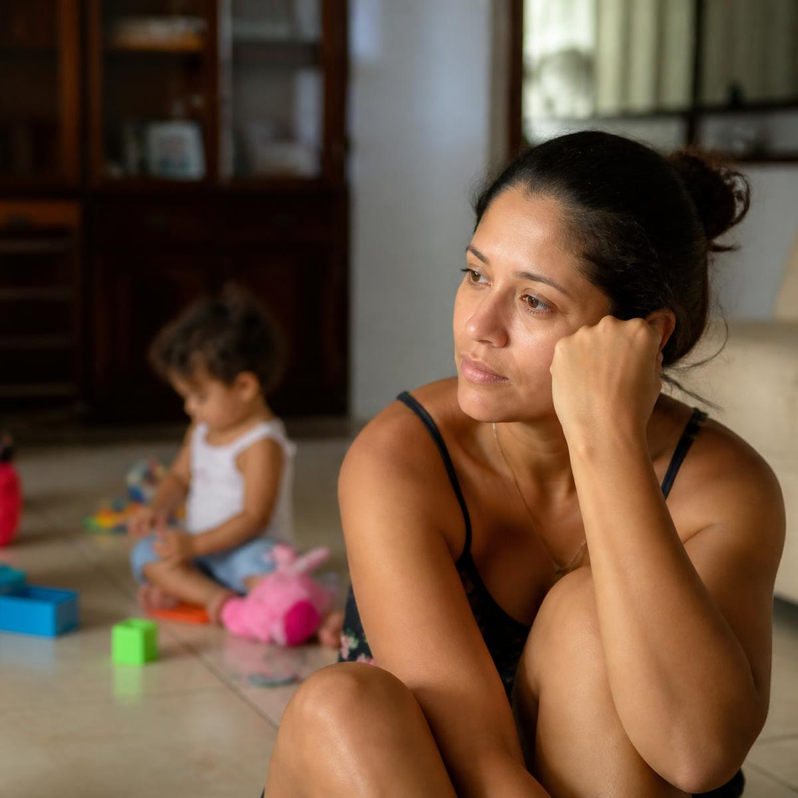
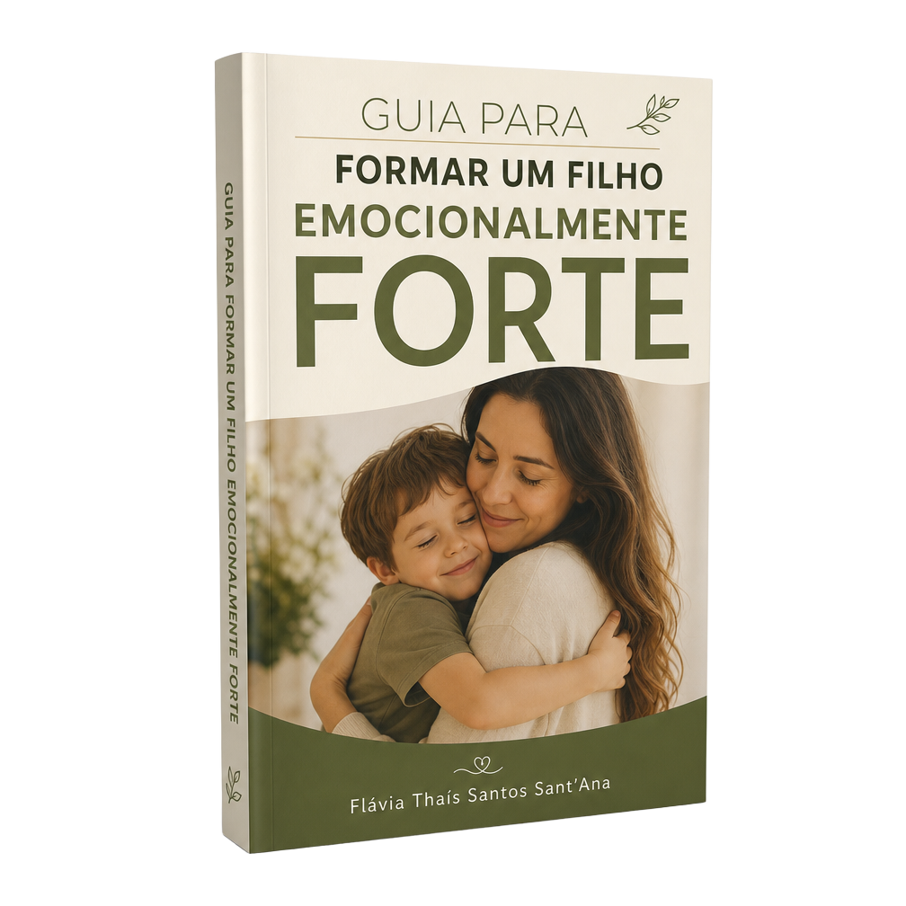
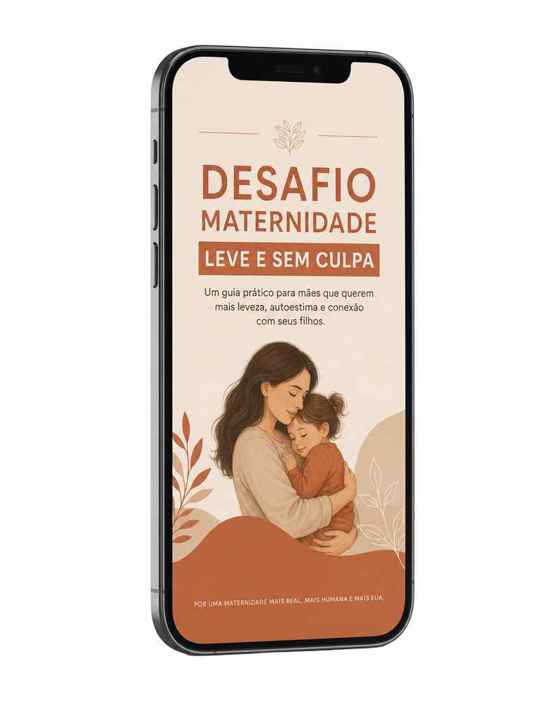
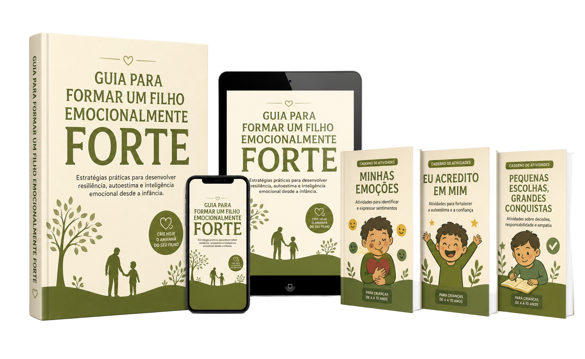
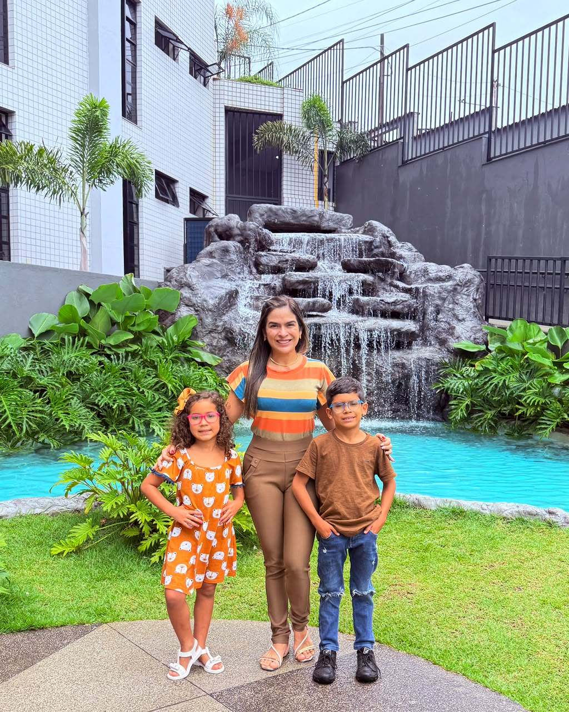

Um guia prático para mães que querem preparar os filhos para a vida
Aprenda, através de princípios cristãos, como ajudar seu filho a compreender melhor as emoções, desenvolver limites e crescer com mais equilíbrio, com atitudes simples que você pode começar a aplicar hoje.
Repetir a mesma coisa o tempo todo, não aceitar ser corrigido, não conseguir manter uma rotina e ter dificuldade para aprender podem fazer uma mãe se perguntar:
“Isso é só uma fase ou ele está tentando me dizer alguma coisa?”

Pequenas atitudes repetidas todos os dias ajudam a construir um ambiente com mais diálogo, afeto, responsabilidade e limites.
Sem direção
Com mais consciência
É justamente por isso que este guia foi criado.
Seis passos simples para aplicar dentro da rotina da sua casa.
Nem todo choro é birra e nem toda birra é rebeldia. Entender o que está por trás do comportamento é o primeiro passo para agir com mais clareza.
Pequenos sinais aparecem na rotina: no sono, no apetite, na escola e na forma de brincar. Observar antes de reagir muda a conversa.
Quando a criança consegue nomear o que sente, ela precisa de menos explosões para se comunicar com você.
Limite não é ausência de amor. É direção. O guia mostra como manter firmeza e vínculo dentro da mesma conversa.
Existem sinais que pedem atenção especializada. Saber identificá-los evita tanto o exagero quanto a demora.
Uma pequena atitude por dia, aplicada dentro da sua casa, sem precisar mudar toda a sua maternidade de uma vez.
O guia principal, dois materiais complementares e três bônus para as crianças.

Orientações práticas sobre emoções, limites, comportamento e saúde emocional infantil, com um plano de ação de 7 dias.
Um material prático para ajudar você a compreender melhor o comportamento do seu filho, fortalecer o vínculo entre vocês e construir uma relação mais leve, segura e consciente no dia a dia.

Uma série de pequenas práticas diárias para ajudar você a cultivar uma maternidade mais leve, consciente e tranquila, reduzindo a culpa e valorizando as pequenas conquistas de cada dia.
Uma forma leve e visual de apresentar princípios bíblicos às crianças, facilitando a compreensão e criando momentos de aprendizado em família.
Conteúdo lúdico para despertar a curiosidade da criança pela Bíblia e tornar o aprendizado mais interessante, simples e divertido.
Atividades pensadas para ajudar a criança a compreender os 10 Mandamentos de forma prática, participativa e adequada ao universo infantil.
Se você se identificou com 2 ou mais situações, este guia foi feito para você.
Tudo isso foi organizado para ajudar você a transformar pequenas atitudes da rotina em momentos de aprendizado emocional.
E hoje você terá acesso por apenas...

Apenas 9x de
R$ 8,80
ou R$ 67,00 à vista
QUERO ACESSAR AGORA
Sou cristã, esposa e mãe de dois filhos. Escolhi dedicar grande parte da minha vida à educação deles e percebi que formar crianças mais seguras e responsáveis exige amor, presença, incentivo e limites.
Foi da minha própria experiência dentro da maternidade que nasceu este material, com práticas que busco aplicar dentro da minha casa.